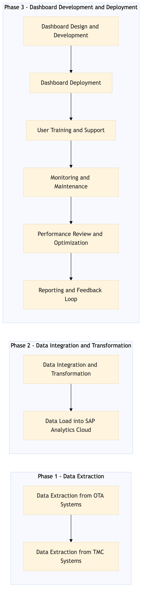

This process document outlines the EX-EM-08 — Expense Analytics and Spend Dashboard SAP Analytics Cloud, focusing on integrating various OTA and TMC systems to provide comprehensive expense analytics and spend management.
| Trigger | Initiation of a new financial reporting cycle or upon request from stakeholders for updated expense data analysis. |
| Outcome | Successful creation and deployment of an interactive expense analytics dashboard in SAP Analytics Cloud, enabling real-time monitoring and insights into travel expenses across different systems. |
| Systems | Expedia Open World Partner Central Amadeus NDC Sabre GDS Travelport EVC One Key TravelAds AWS SageMaker Snowflake Kafka Salesforce Tableau SAP Concur T2 SAP Concur Expense Amex GBT Neo/Complete Amadeus GDS SAP S/4HANA International SOS Cvent Amex Corporate Card VCN SAP Analytics Cloud |

Click to enlarge
| Step | Name & Pain Point | Role | System | Input | Output | KPI | Flags |
|---|---|---|---|---|---|---|---|
| 1.1 | Data Extraction from OTA Systems Handling inconsistent data formats across different OTA systems | Data Engineer | Expedia Open World, Partner Central, Amadeus NDC, Sabre GDS, Travelport, EVC, One Key, TravelAds, AWS SageMaker, Snowflake, Kafka, Salesforce | Expense data from various OTA systems | Extracted and transformed expense data in a standardized format | Data extraction success rate > 95% | ⚠ Exception |
| 1.2 | Data Extraction from TMC Systems Integrating with legacy systems like SAP S/4HANA | Data Engineer | SAP Concur T2, SAP Concur Expense, Amex GBT Neo/Complete, Amadeus GDS, SAP S/4HANA, International SOS, Cvent, Amex Corporate Card, VCN | Expense data from various TMC systems | Extracted and transformed expense data in a standardized format | Data extraction success rate > 95% | ⚠ Exception |
| 1.3 | Data Integration and Transformation Real-time data synchronization between systems | ETL Specialist | AWS SageMaker, Snowflake, Kafka | Standardized expense data from OTA and TMC systems | Integrated and transformed data ready for analytics | Data integration success rate > 98% | ⚠ Exception |
| 1.4 | Data Load into SAP Analytics Cloud Handling large volumes of data efficiently | BI Analyst | SAP Analytics Cloud | Integrated and transformed expense data | Loaded data in SAP Analytics Cloud for analytics | Data load success rate > 99% | ⚠ Exception |
| 1.5 | Dashboard Design and Development Designing intuitive and user-friendly dashboards | BI Analyst | SAP Analytics Cloud, Tableau | Loaded expense data in SAP Analytics Cloud | Interactive expense analytics dashboard | User satisfaction with dashboard > 85% | ⚠ Exception |
| 1.6 | Dashboard Deployment Ensuring secure and seamless deployment | BI Analyst | SAP Analytics Cloud | Finalized expense analytics dashboard | Deployed dashboard accessible to stakeholders | Deployment success rate > 95% | ⚠ Exception |
| 1.7 | User Training and Support Providing adequate training and support | BI Analyst, IT Support | SAP Analytics Cloud | Deployed expense analytics dashboard | Trained users on using the dashboard | User adoption rate > 80% | ⚠ Exception |
| 1.8 | Monitoring and Maintenance Handling unexpected issues in real-time | Data Engineer, BI Analyst | AWS SageMaker, Snowflake, SAP Analytics Cloud | Operational data from deployed dashboard | Continuous monitoring and maintenance of the system | System uptime > 99% | ⚠ Exception |
| 1.9 | Performance Review and Optimization Optimizing query performance for large datasets | BI Analyst, Data Engineer | SAP Analytics Cloud, AWS SageMaker, Snowflake | Operational data from deployed dashboard | Optimized system performance based on review | Query response time < 5 seconds | ⚠ Exception |
| 1.10 | Reporting and Feedback Loop Collecting actionable feedback from users | BI Analyst, Stakeholders | SAP Analytics Cloud, Salesforce | Operational data from deployed dashboard | Regular reporting and feedback loop for continuous improvement | Feedback response time < 24 hours | ⚠ Exception |